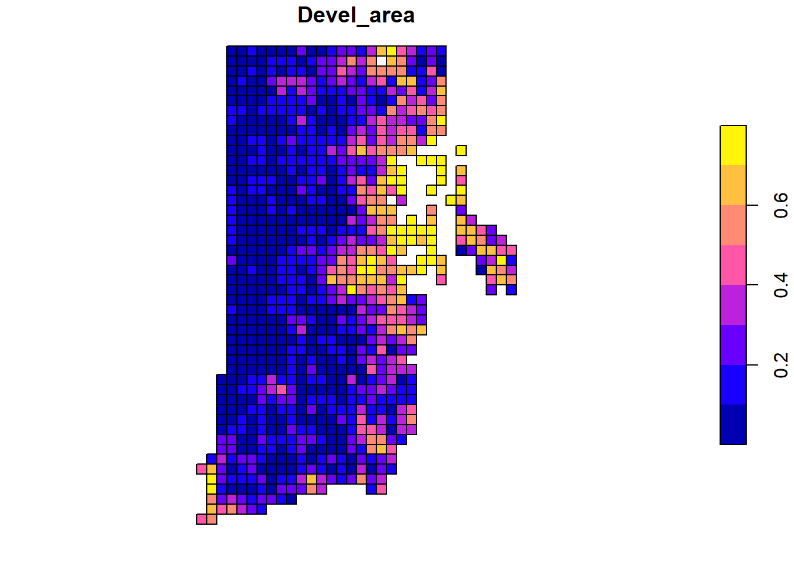
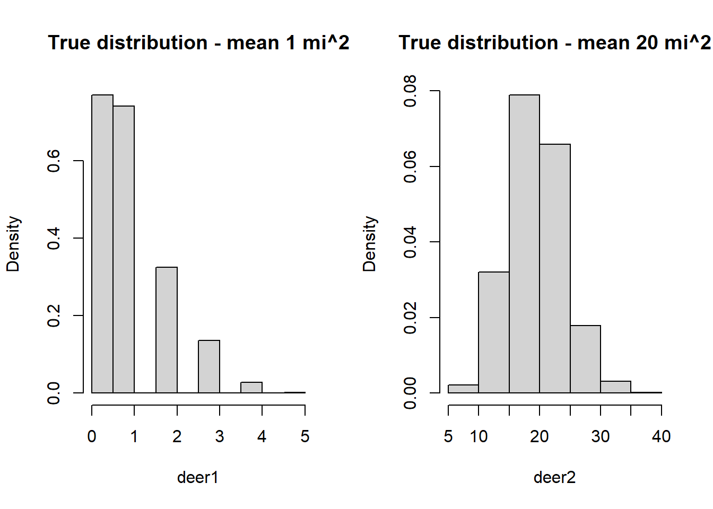
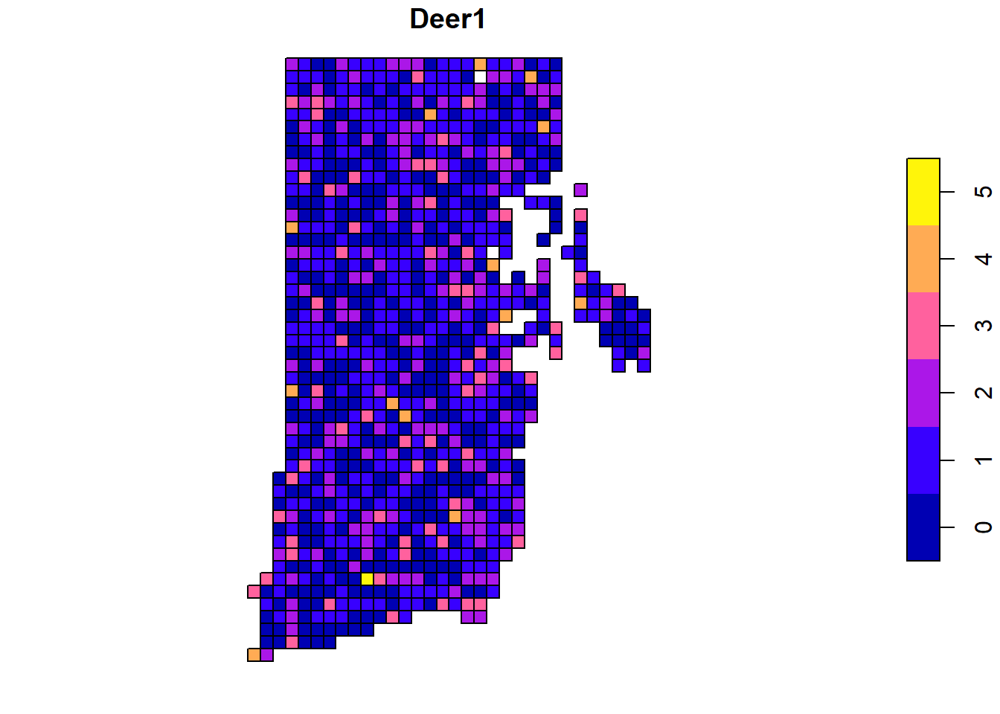
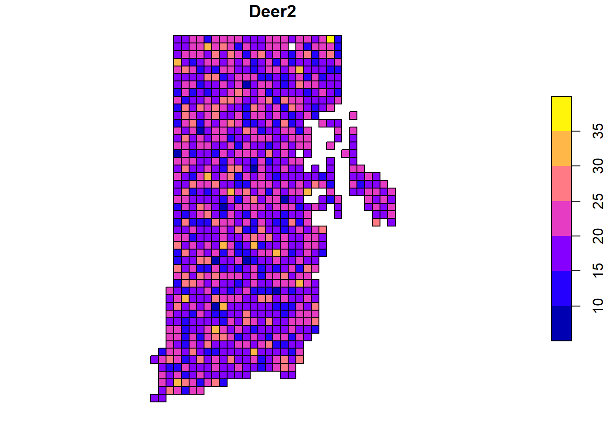

My title
Report
Main Take-Away:
Context
In this report, I evaluate sampling design trade-offs in estimating total white-tailed deer abundance in the state of Rhode Island, USA. I consider two extremes of deer density - 1 deer/mi\(^2\) and 20 deer/mi\(^2\). For each deer density, I use a random sampling process to choose blocks of 1 mi\(^2\) to conduct a forward-looking infrared-red (FLIR) count of deer. The count is presumed to be done by helicopter with a FLIR camera attachment. Flights are assumed to occur in the winter and at night to increase the heat signature of deer. As such, detection probability within a block is assumed to be one (this however should be evaluated). I evaluate three sample sizes of 10, 20, and 40 blocks. The objective is to find the sample size that minimizes costs while being highly certain (0.90 probability) that the total population estimate is within 10% of the true value. This study design evaluation is done by using design-based sampling and inference.
Setup
I considered the sampling frame to include all one square mile blocks of contiguous lands in Rhode Island that have less than 80% ‘development’.
# find values of high development
index=which(RI$Devel_area>0.8)
# drop values of high development and make a new spatial object
RI=RI[-index,]
# Update the id column
RI$Id=1:nrow(RI)
# plot updated map
plot(RI["Devel_area"])
There are no current studies to suggest the true mean deer density or the spatial structure of the Rhode Island deer population. As such, I will simulate two scenarios that consider a low (1 deer/mi\(^2\)) and high mean deer density (20 deer/mi\(^2\)).
# Mean deer per square mile (1 cell)
deer.dens=c(1,20)
# Total expected deer populations
deer.dens*nrow(RI)[1] 944 18880# Simulate deer densities
set.seed(434343)
deer1=rpois(nrow(RI),deer.dens[1])
deer2=rpois(nrow(RI),deer.dens[2])
par(mfrow=c(1,2))
hist(deer1,freq=FALSE, main="True distribution - mean 1 mi^2")
hist(deer2,freq=FALSE, main="True distribution - mean 20 mi^2")
The assumed true total population size for both scenarios are 905 and 18800, respectively. These populations include random spatial variation. Considering additional spatial structure, such as variation in deer density by the percentage of development (Devel_area) could be a useful exercise.


Simulation
I will consider sampling both populations with three different samples sizes (10, 20, and 40). For each sample size, I will simulate random samples 1000 times. This will not evaluate all possible combinations of samples for each size, but it will be enough to approximate the sampling distribution. This can be evaluated by looking at the symmetry of the sampling distribution. Highly skewed and non-symmetric sampling distributions will require a higher number of simulations.
sample.sizes = c(10, 20, 40)
n.sim = 1000The below code is shown to make it clear how exactly the sampling and estimation is done There are two for loops. One (index z) that loops through the number of sample sizes and the other (index i) that loops through the the number of simulation iterations within each sample sample.
The important code is the use of the function grts that selects a spatially balanced sample from the areal sampling frame and the estimation of the mean deer size for each cell using the function mean. There is no model used to estimate and predict the total deer abundanec. Rather, I am using the mean as the estimator.
# Here, I am demonstrating random sampling one time and for one sample size and then using that random sample to estimate the total deer population for low and high scenarios.
sample.size=10
eqprob <- grts(RI, n_base = sample.size)
y1=eqprob$sites_base$Deer1
y2=eqprob$sites_base$Deer2
est1=mean(y1)
est2=mean(y2)
deer.total.abundance1=est1*nrow(RI)
deer.total.abundance2=est2*nrow(RI)Results
First, examining the absolute bias of the estimator, we see . . .
Looking at the sampling distributions for low and high deer density, we see ….
The range (min-max) of possible total deer population estimates at low and high deer density for sample sizes (10, 20, and 40) are:
To specifically address the objective of this study, I used Monte Carlo integration to estimate the probability a single total deer density would be within 10% of truth. I found….
Conclusion
Considering low and high deer densities, I found that the objective to be highly certain (0.90 probability) that a single estimate of the total population estimate is within 10% of the true value….
Appendix
Software
This report was generated from the R Statistical Software (v4.2.2; R Core Team 2021) using the Markdown language and RStudio. The R packages used are acknowledged below.
| Package | Version | Citation |
|---|---|---|
| base | 4.4.1 | @base |
| doParallel | 1.0.17 | @doParallel |
| foreach | 1.5.2 | @foreach |
| knitr | 1.47 | @knitr2014; @knitr2015; @knitr2024 |
| rmarkdown | 2.27 | @rmarkdown2018; @rmarkdown2020; @rmarkdown2024 |
| sf | 1.0.16 | @sf2018; @sf2023 |
| spsurvey | 5.5.1 | @spsurvey |
| tictoc | 1.2.1 | @tictoc |
| tidyverse | 2.0.0 | @tidyverse |